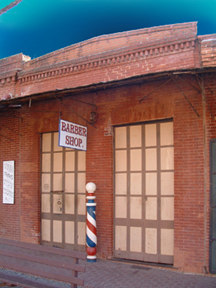
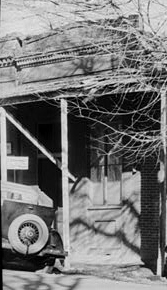
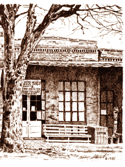
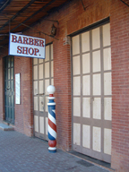

SAM LEON BUILDING.
(AKA: Auction House, Grocery Store, Jeweler, Barber Shop, Photo Shop.)
1856 - Present.

© Floyd D. P. Øydegaard.
The Sam Leon Building - 2007.
(Main Street east - next door to Columbia Booksellers)

1851 Fernando Yrizar has a store and restaurant on this lot. There are wood buildings on 4 lots in a row.
1852 Yrizar sells the lot to Juan Dupont.
1854 Ignatio Christian owns the lot, Carpenter and O'Hara (Uncle Billy) are operating the Jenny Lind restaurant. Christen sells the lot to Sam Leon who has a clothing store and adds a frame building in the rear.
1856 spring - Leon builds a 1 story brick structure with the "back building" where his family lived. By the end of the year, the business sells to Morris Lewisson. Later, Jacobi and Morris, auctioneers occupy the store.
1860 Leon returns from San Francisco and opens a grocery store with his partner, G. J. Ward. Ward leaves in September.
1863 Leon sells to Jack Douglass.
1865 Jack Douglass sells to Wm. Black.
1867 Wm. Black sells to Charles Koch.
1868 After renovating and adding bath tubs, Koch opens his barber shop. One window is rented to Martin's jeweler's shop.
1871 August - Koch owns Block 10, Lot 170 - Deputy County Surveyor map by John P. Dart
1875 R.H. Towle replaces Martin as the jeweler.
1880 Gardiner Evans replaces Towle. Eventually Koch has canaries in the window.
1898 Frank Dondero takes over the shop while Koch lives in the back rooms.
1900 Koch gives half interest in his property to his nephews, Charles Mayer and Richard Luckow.
1902 Koch dies, Dondero continues the barbershop, he also is elected county supervisor.
1929 Luckow gives his interest to his children: Richard and Charles Luckow and Laverne Luckow Nicolas.

© Columbia State Historic Park.
Period barber pole visible in 1934.
1947 State purchases from Richard Luckow, et al.
1964 Dondero retires.
1965 Bill Davis becomes the barber.
1969 30 September - William R. Davis has a one year special use permit to operate the barber shop. (Park & Concessionaire report 1969-70)
1972 30 September - William R. Davis has a 5 year contract to operate the barber shop. (Park & Concessionaire report 1974-75)
1977 30 September - William R. Davis has another 5 year contract to operate the barber shop. (Park & Concessionaire report 1979-80)
"The barber who was there, when I visited with my class, used to get people out in front of the store and show the crowd the finger he found down on the waterfront of San Francisco after the earthquake of 1906 and the finger belonged to Three Finger Jack, the famous bandit.
"He had the finger in a little white box and, of course, it
was his own finger, which the crowd would plainly see. When
they got closer, he moved the finger and shouted, 'It's
alive!' Everyone jumped 10 ft straight up."

© Ron Stout.
Drawing of the Sam Leon Building - 1981.
1982 30 September - Bill Davis retires.
1984 Bill Sey barber, for a very short time.
2002 September 1st - Janet Newby is the barber. Opened Thursday through Monday.
2006 December 31st - Newby's Barber Shop closes.

© Floyd D. P. Øydegaard.
Barber shop - 2007.
2009 Sam Leon Building gets repairs and a paint job. Historic contents removed.
2010 Kamice's Photographic Establishment opens in the building as a temporary location.
Kamice's Photographic Establishment.
22729 Main Street
Columbia, California
209 532-4861
Photos In Columbia

From the Thames Salon read the
Barber Pole History
This page is created for the benefit of the public by
Floyd D.P. Oydegaard
Email contact:
fdpoyde3 (at) yahoo (dot) com
A WORK IN PROGRESS,
created for the visitors to the Columbia State Historic park.
© Columbia State Historic Park & Floyd D. P. Øydegaard.